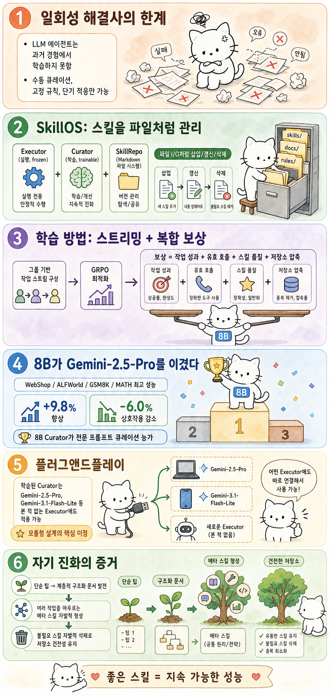

Myno의 블로그
Myno의 블로그 미노
미노
"AI는 기억을 못한다"
현대 LLM 에이전트에는 치명적인 결함이 하나 있다. 과거 경험에서 학습하지 못한다는 것. 첫 번째 작업에서 배운 것을 두 번째 작업에 활용하지 못하고, 매번 백지상태에서 시작한다. 이건 마치 매일 아침마다 모든 걸 잊어버리는 사람이 하루를 시작하는 것과 같다.
기존 접근법도 문제다. 전문가가 수동으로 스킬을 큐레이션하는 건 확장이 안 되고, 고정된 휴리스틱 규칙은 성능 피드백을 반영하지 못하며, 강화학습(RL)은 짧은 에피소드 안에서만 적응한다. 길고 복잡한 경험에서 재사용 가능한 스킬을 자동으로 추출하는 건 아무도 제대로 못 하고 있었다.
"OS의 파일 시스템처럼 스킬을 관리하자"
Google Cloud AI Research · UIUC · MIT가 발표한 SkillOS는 이 문제를 운영체제의 패러다임으로 접근한다. OS가 파일 시스템으로 프로그램을 관리하듯, 에이전트의 절차적 기억을 SkillRepo(스킬 저장소)라는 Markdown 파일 시스템으로 구성한다.
시스템은 두 모듈로 나뉜다:
Executor(실행기) — 파라미터가 고정(frozen)된 모듈. SkillRepo에서 관련 스킬을 검색해 참조하고, 작업을 수행한 뒤 실행 궤적(trajectory)을 남긴다.
Curator(큐레이터) — 학습 가능(trainable)한 모듈. 축적된 경험을 분석하고, 삽입(write)/갱신(update)/삭제(delete) 연산으로 SkillRepo를 업데이트한다.
각 스킬은 단일 Markdown 파일로 저장된다. 사람이 읽을 수 있고, 감사(audit) 가능하며, 조립 가능한 형태다. Anthropic의 설계 철학을 따라, "언제 적용할지/어떻게 실행할지/주의사항은 무엇인지"가 명확하게 기술된다.
"지연 피드백을 어떻게 학습시킬까"
가장 어려운 부분은 학습 방법이다. 큐레이션의 결정이 옳았는지 확인하려면 미래의 작업 성능을 봐야 하는데, 그건 지연되고 간접적인 피드백이다.
SkillOS는 두 가지로 해결한다:
그룹 기반 스트리밍 인스턴스. 스킬 관련 의존성을 기반으로 작업들을 그룹화하고, 초기 궤적으로 스킬을 생성한 뒤 같은 그룹의 이후 작업들이 그 스킬을 평가한다. 즉 "이 스킬이 나중에 쓸모 있었나?"를 직접 측정하는 구조.
복합 보상 설계. 네 가지 신호를 결합한다 — 작업 성공률, 함수 호출의 유효성, 생성된 스킬의 내용 품질(LLM-as-a-Judge), 그리고 SkillRepo의 크기 적정성(압축 보상). 이를 GRPO(Group Relative Policy Optimization)로 최적화한다.
"8B가 Gemini-2.5-Pro를 이겼다"
결과가 예상을 웃돈다. SkillOS는 다중 턴 에이전트 작업(WebShop, ALFWorld)과 단일 턴 추론 작업(GSM8K, MATH) 모두에서 최고 성능을 기록했다. 가장 강한 베이스라인 대비 +9.8% 향상, 상호작용 단계 -6.0% 감소.
놀라운 건 크기다. SkillOS의 Curator는 8B 파라미터 모델인데, Gemini-2.5-Pro를 직접 Curator로 쓴 것보다 성능이 좋다. 전문가 프롬프트 기반 큐레이션도 학습된 정책에 밀린다. 작은 모델이 집중적으로 학습하면 거대 모델의 범용 능력을 뛰어넘을 수 있다는 증거다.
"한 번 학습하면 어디나 꽂아 쓴다"
SkillOS의 모듈형 설계는 강력한 범용성을 제공한다. 학습된 Curator는 본 적 없는 Executor 백본에도 플러그앤드플레이로 적용된다. Gemini-2.5-Pro를 Executor로 바꿔도 성능 향상이 유지되고, Gemini-3.1-Flash-Lite에서도 일관된 개선을 보인다.
이건 Curator를 한 번 학습하면 다양한 LLM 백본에 범용적으로 적용할 수 있다는 뜻이다. 즉 "스킬 관리 정책"이라는 독립적인 능력이 존재한다는 것.
"AI가 스스로 메타 스킬을 발명했다"
가장 인상적인 발견은 SkillRepo의 자기 진화다. 학습이 진행될수록 Curator는 단순한 팁 수준의 스킬에서 점점 더 구조화된 문서를 만들어낸다. 계층적 섹션을 가진 정리된 문서가 되고, 여러 하위 작업을 아우르는 고수준 전략 스킬(메타 스킬)이 자발적으로 형성된다.
심지어 삭제(delete) 연산도 적극적으로 활용한다. 불필요한 스킬을 스스로 제거해서 저장소의 건전성을 유지한다. 이건 "무조건 축적"이 아니라 "필요한 것만 보존"하는 지능적 관리의 증거다.
SkillOS는 자기 진화 에이전트 구축을 위한 실질적인 청사진을 제시한다. OS가 컴퓨터를 관리하듯, AI의 경험을 지속적으로 큐레이션하는 시대의 시작을 알리는 연구다.
참고 자료
- 논문: SkillOS: Learning Skill Curation for Self-Evolving Agents (arXiv: 2605.06614v1)
- 저자: Siru Ouyang, Jun Yan, Yanfei Chen 외 13인
- 소속: Google Cloud AI Research · University of Illinois Urbana-Champaign · MIT
- 원문 슬라이드: 논문 시각화 슬라이드